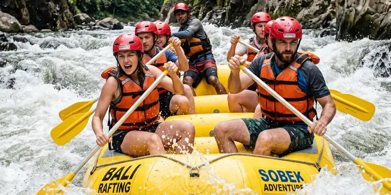

River rafting adalah kegiatan mengarungi sungai berarus deras menggunakan perahu karet bersama tim, dan istilah internasionalnya, white water rafting, sering dipakai untuk menjelaskan aktivitas ini kepada turis asing di Malang. Panduan ini merangkum lokasi, tingkat kesulitan, biaya, dan persiapan penting.
Ringkasan Inti
- River rafting di Malang umumnya dilakukan di sungai dengan jeram grade dua sampai empat.
- Istilah white water rafting lebih dikenal turis asing dibanding istilah lokal arung jeram.
- Lokasi populer di sekitar Malang antara lain Sungai Pekalen dan Kasembon Rafting.
- Biaya rafting biasanya sudah termasuk perahu, dayung, helm, dan rompi pelampung.
- Keselamatan bergantung pada briefing pemandu dan kepatuhan peserta terhadap instruksi.
Apa Itu River Rafting?
River rafting adalah olahraga arus deras yang dilakukan dengan mendayung perahu karet melewati jeram sungai secara berkelompok. Aktivitas ini menggabungkan unsur petualangan, kerja sama tim, dan interaksi langsung dengan alam terbuka.
Di Indonesia, istilah "arung jeram" dan "river rafting" digunakan secara bergantian. Namun untuk komunikasi dengan turis asing, operator wisata di Malang lebih sering memakai istilah internasional white water rafting karena lebih mudah dikenali dan dicari melalui mesin pencari berbahasa Inggris.
Secara teknis, tingkat kesulitan sungai dikategorikan dalam grade satu hingga enam berdasarkan standar internasional International Scale of River Difficulty. Grade satu berarti arus tenang dan aman untuk pemula, sedangkan grade enam nyaris tidak dapat diarungi karena risikonya sangat tinggi. Sebagian besar jalur wisata di sekitar Malang berada pada grade dua hingga empat, yang cocok untuk wisatawan umum dengan pengalaman minim hingga menengah.
Mengapa Istilah White Water Rafting Penting bagi Turis Asing di Malang?
Istilah white water rafting penting karena menjadi kata kunci utama yang digunakan turis asing saat mencari aktivitas arung jeram secara daring, sehingga operator lokal perlu mencantumkannya agar mudah ditemukan.
Ketika wisatawan mancanegara merencanakan perjalanan ke Jawa Timur, mereka cenderung mengetik istilah dalam bahasa Inggris seperti "white water rafting near Malang" atau "rafting Malang Indonesia" dibanding istilah lokal. Penggunaan istilah internasional ini juga membantu:
- Memudahkan komunikasi lintas bahasa antara operator dan wisatawan.
- Menyamakan ekspektasi mengenai tingkat kesulitan jeram menggunakan skala grade yang sudah dikenal secara global.
- Meningkatkan visibilitas destinasi Malang di platform pemesanan wisata internasional.
Banyak operator wisata di kawasan Malang dan Probolinggo kini mencantumkan dua istilah sekaligus dalam materi promosi mereka, yaitu versi Indonesia dan versi internasional, agar dapat menjangkau segmen pasar domestik maupun mancanegara secara bersamaan.

River rafting menawarkan pengalaman seru menembus derasnya jeram sungai sambil menikmati keindahan alam liar.
Di Mana Lokasi River Rafting Terbaik di Sekitar Malang?
Lokasi river rafting terbaik di sekitar Malang meliputi Sungai Pekalen di Probolinggo dan Kasembon Rafting di Sungai Konto, yang keduanya dapat dijangkau dalam waktu tempuh sekitar satu hingga dua jam dari pusat kota Malang.
Sungai Pekalen dikenal luas sebagai salah satu jalur arung jeram paling populer di Jawa Timur. Jalur ini terbagi menjadi Pekalen Atas dan Pekalen Bawah, dengan Pekalen Atas menawarkan tantangan jeram yang lebih menantang dan pemandangan tebing alami di sepanjang aliran sungai.
Kasembon Rafting berada di Sungai Konto, wilayah Kasembon, Kabupaten Malang, dan menjadi pilihan favorit karena jaraknya yang relatif dekat dari pusat kota Malang serta cocok untuk pemula maupun keluarga.
Beberapa faktor yang perlu dipertimbangkan saat memilih lokasi:
- Jarak tempuh dari akomodasi atau pusat kota Malang.
- Tingkat kesulitan jeram yang sesuai dengan pengalaman peserta.
- Ketersediaan fasilitas pendukung seperti tempat bilas dan area istirahat.
- Reputasi dan standar keselamatan operator setempat.
Bagaimana Cara Kerja River Rafting dari Awal Sampai Selesai?
River rafting umumnya berlangsung melalui tahapan briefing keselamatan, pemasangan perlengkapan, pengarungan sungai bersama pemandu, dan sesi istirahat di titik-titik tertentu sepanjang rute.
Tahapan umum yang biasa dilalui peserta:
- Registrasi dan pengecekan kondisi fisik peserta oleh petugas operator.
- Briefing keselamatan mengenai teknik dayung, posisi duduk, dan prosedur darurat.
- Pemasangan helm, rompi pelampung, dan pengecekan perahu.
- Pengarungan sungai dengan pemandu berpengalaman di setiap perahu.
- Titik istirahat untuk berfoto atau menikmati pemandangan sungai.
- Sesi akhir berupa pembersihan diri dan pengambilan sertifikat atau foto kegiatan bila tersedia.
Durasi total kegiatan biasanya berkisar antara dua hingga tiga jam tergantung panjang jalur dan jumlah titik jeram yang dilalui.
Berapa Biaya dan Apa Saja yang Perlu Dipersiapkan?
Biaya river rafting di kawasan Malang umumnya sudah mencakup sewa perahu, dayung, helm, rompi pelampung, dan jasa pemandu, sementara persiapan utama peserta meliputi pakaian ganti, alas kaki khusus air, dan kondisi fisik yang sehat.
Barang yang sebaiknya dibawa peserta:
- Pakaian ganti dan handuk kecil.
- Sandal gunung atau sepatu khusus air yang tidak licin.
- Sunblock dan kacamata hitam bertali.
- Tas kedap air untuk menyimpan barang berharga.
Hal yang perlu diperhatikan sebelum berangkat:
- Pastikan kondisi kesehatan dalam keadaan fit, terutama bagi peserta dengan riwayat jantung atau tekanan darah tidak stabil.
- Ikuti seluruh instruksi pemandu tanpa terkecuali.
- Hindari membawa barang elektronik yang tidak tahan air kecuali sudah terlindungi khusus.
- Tanyakan batas usia dan berat badan minimum kepada operator sebelum memesan.
Apa Saja Risiko dan Cara Meminimalkannya?
Risiko utama river rafting meliputi terjatuh dari perahu, benturan dengan bebatuan, dan hipotermia ringan, namun risiko ini dapat diminimalkan dengan mematuhi briefing keselamatan dan menggunakan perlengkapan standar secara benar.
Operator yang bertanggung jawab biasanya menyediakan pemandu bersertifikat, perlengkapan keselamatan standar, dan prosedur evakuasi darurat. Wisatawan disarankan memilih operator yang memiliki izin resmi dan ulasan positif dari peserta sebelumnya, bukan sekadar operator dengan harga termurah.
Kesimpulan
River rafting di sekitar Malang menawarkan pengalaman arung jeram yang dapat disesuaikan dengan tingkat pengalaman peserta, mulai dari jalur ramah pemula di Kasembon hingga jalur yang lebih menantang di Sungai Pekalen. Istilah white water rafting tetap relevan digunakan berdampingan dengan istilah lokal agar destinasi ini mudah ditemukan oleh wisatawan domestik maupun mancanegara. Persiapan fisik, pemilihan operator terpercaya, dan kepatuhan terhadap instruksi keselamatan adalah tiga faktor utama yang menentukan pengalaman rafting yang aman dan menyenangkan.
FAQ
Keduanya merujuk pada aktivitas yang sama, yaitu mengarungi sungai berarus deras dengan perahu karet; white water rafting adalah istilah internasional yang lebih dikenal wisatawan asing.
River rafting umumnya aman untuk pemula selama memilih jalur dengan grade jeram rendah hingga menengah dan mengikuti seluruh instruksi pemandu.
Durasi kegiatan biasanya berkisar dua hingga tiga jam, tergantung panjang jalur sungai dan jumlah titik jeram yang dilalui.
Sebagian besar operator menetapkan batas usia dan berat badan minimum tertentu, sehingga penting menanyakan kebijakan ini langsung kepada operator sebelum memesan.
Perlengkapan wajib meliputi helm pelindung kepala dan rompi pelampung, yang biasanya sudah disediakan oleh operator sebagai bagian dari paket rafting.